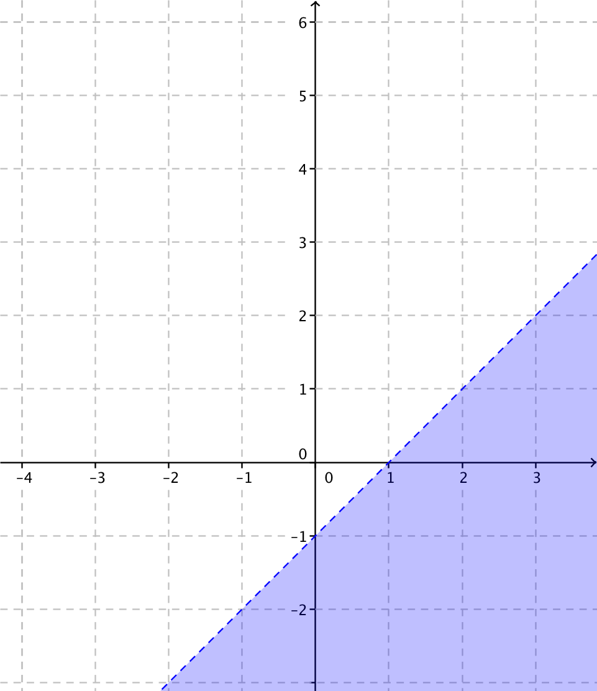
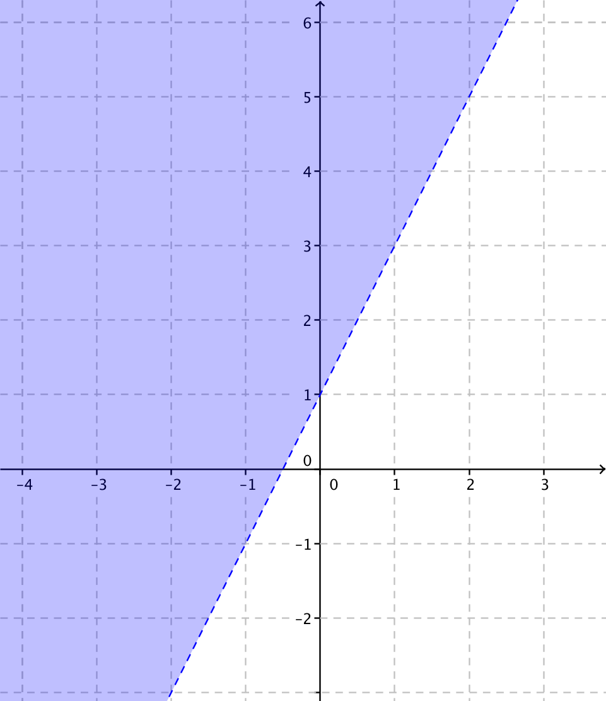
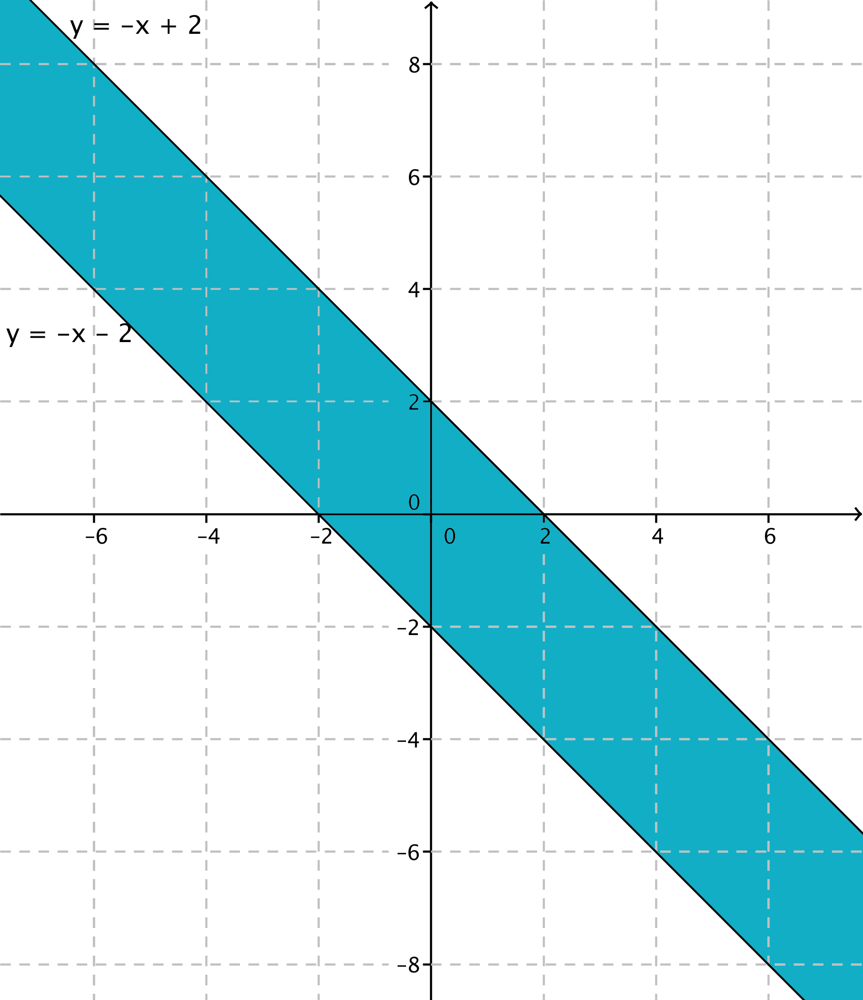

9. Ekvationen \( Ax + By + C = 0 \)
Vad föreställer \( 4x-2y +6=0 \)?
Ekvationen för en linje kan vi antingen uttrycka som \( Ax+By+C=0 \), \( y-y_0=k(x-x_0) \) eller som \( y=kx+b \).
- \( Ax+By+C=0 \) kallas för linjens ekvation i allmän form.
- \( y-y_0=k(x-x_0) \) kallas för linjens ekvation i enpunktsform.
- \( y=kx+b \) kallas för linjens ekvation i standardform.
Exempel 1 En linje skär x-axeln i punkten 5 och har riktningskoefficienten -1. Bestäm linjens ekvation i allmän form.
Lösning
Vi börjar med att använda oss av enpunktsformen, \( y-y_0=k(x-x_0) \). Om linjen skär x-axeln i punkten 5 går den igenom punkten (5,0).
\( \begin{array}{rcll} y-y_0 & = & k(x-x_0) \\ y-0 & = & -1(x-5) \\ y & = & -x+5 & \textrm{Här har vi ekvationen i enpunktsform.}\\ x+y-5 & = & 0 & \textrm{Här har vi ekvationen i allmän form.} \\ \end{array} \)
Exempel 2 Bestäm de punkter som uppfyller villkoret \( 2x+y-4 < 0 \)?
Uppgifter
- Vad föreställer följande ekvationer? Skriv ekvationerna i formen \( y = \).
- \( 3x+y-9=0 \)
Linjen \( y=-3x+9 \)
- \( -3x+2y = 4 \)
Linjen \( \dfrac{3}{2}x+2 \).
- \( 2x-y=2(x-1) \)
Linjen \( y=2 \).
- \( 3x+y-9=0 \)
- Bestäm ekvationen för den linje som är parallell med \( y=-2x-5 \) och skär \( y \)-axeln i punkten \( 4 \).
Vår linje skall ha riktningskoefficienten \( -2 \) (varför?) och gå genom punkten \( (0,4) \) (varför?).
Linjens ekvation är \( y-y_0 =k(x-x_0) \). Vi får \( y-4=-2(x-0) \). Linjens ekvation är \( y=-2x+4 \).
- Bestäm ekvationen för den linje som är parallell med \( y=3x+2 \) och har nollstället \( -2 \).
Vår linje skall ha riktningskoefficienten \( 3 \) (varför?) och gå genom punkten \( (0,-2) \) (varför?).
Linjens ekvation är \( y-y_0 =k(x-x_0) \). Vi får \( y+2=3(x+2) \). Linjens ekvation är \( y=3x+4 \).
- Visa att \( x-1=y \), \( 3x=3(y+1) \) och \( 2(y-x)=-2 \) representerar samma linje.
Vi skriver alla ekvationer på samma sätt och jämför om vi får samma uttryck.
\( x-1=y \Leftrightarrow y=x-1 \),
\( 3x=3(y+1) \Leftrightarrow y=x-1 \) och
\( 2(y-x)=-2 \Leftrightarrow y=x-1 \). Alla uttryck representerar samma linje \( y=x-1 \).
- Finns punkten \( (297,668) \) ovan eller nedanför linjen \( 9x -4y +2 = 0 \)?
Vi skriver ekvationen som \( y = 4\dfrac{1}{4}x + \dfrac{1}{2} \).
Vi sätter in \(x\)-koordinaten i linjens ekvation och jämför värdet med punktens \(y\)-koordinat. Vi får \( y = 668,25 /).
Alltså ligger punkten nedanför linjen.
- Bestäm storleken av arean som bildans mellan linjen \( 3x -2y+18 =0 \) och koordinataxlarna.
Skärningspunkterna för linjen och koordinataxlarna är \( (-6,0) \) och \( (0,9) \).
Storleken av arean är \( A = \dfrac{1}{2}bh = 27 \)a.e.
- Bestäm de punkter som uppfyller villkoret \( x-y>1 \).
Vi skriver först uttrycket som \( y < x-1 \). Vi ritar utnyttjar linjen \( y=x-1 \) för att svara på frågan.
Vi får

Området är där y är mindre än x-1.
- Bestäm de punkter som uppfyller villkoret \( 2x < y-1 \).
Vi skriver uttrycket som \( y > 2x+1 \) och ritar linjen \( y=2x+1 \). Vi får

y skall var större än \( 2x+1 \).
- Bestäm de punkter som uppfyller villkoret \( \mid x +y \mid < 2 \). Dela upp absolutbeloppet för att komma vidare.
Genom att dela upp absolutbeloppet får vi olikheterna \( x+y < -2 \) och \( x+y < 2 \) (varför?). De skall gälla samtidigt. Alltså
